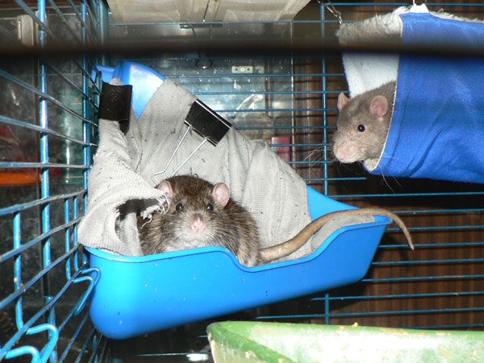

Октябрь 2010
Сентябрь на прогулке сверху клетки.

Он же, на шкафу — типа дача.
Дон Рэба и большая часть Иннокентия в углу за шкафом.

Дон Рэба изволит рыться в мусорном пакете.
— А чего тут нечего есть-то?

Кеша на гамаке, Сеня высовывается.
Пришел Жорик и улегся. Сеня удрал, а Иннокентий пытается вылезти из-под тушки Жоффруа.

Сеня удрал и доволен. Слева вроде бы Циклон, у поилки справа внизу — Терабайт.
Сентябрь раздегся на верхней полке — тут-то точно никто сверху не плюхнется!

Иннокентий тоже смог выбраться и стоит в задумчивости.
… лег отдохнуть. Что-то он какой-то плоский стал…

— Циклон, я хорошо спрятался?

— Нет, Кеша, видно тебя.
— Хозяин,
что, правда?!

Сеня на верхней полке, Циклон в гамаке с твердой крышей — никакой Жорик не страшен!

Дон Рэба, хотя и держится бодрячком, уже совсем не ходит, поэтому отселен в пенсионную клетку.

Аппетит у него, между прочим, ого-го.
Плохо видно, но это Циклон Б пристроился в кормушке спать — очередь занял, когда еду принесут.

— О, у вас крысы водятся!
— Ничего так зверек, увесистый!

— А его на голове носят, да?
— Ага, вот так, показываю…

— Ну, на плече тоже можно, конечно…
— Да, так даже удобнее и приятнее!

Дон Рэба прогуливается по лежбищу. Ноги не ходят, но на руках ползает — только успевай ловить!
Устроился под одеялом. Типа норка.

— Ага, вот ты где!
— Отвяжись, я умываться буду.

— …как минимум до пояса.

Циклон Б выкусывает Жоффруа Тори. Тот балдеет потихоньку.